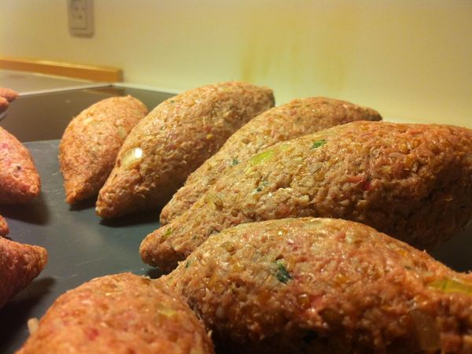

Lanches
Rosquinha Frita:
Ingredientes:
- 4 xícaras de farinha de trigo ou até o ponto.
- 3 xícaras de açúcar refinado.
- 1/2 xícara de óleo.
- 1/2 xícara de leite.
- 2 ovos.
- 1 colher (sopa) de fermento em pó.
- 5 pitadas de sal.
Modo de Preparo:
- Amasse todos os ingredientes, colocando a farinha de trigo por último, aos poucos, até o ponto de enrolar.
- Deixe descansar um pouquinho.
- Deixe esfriar.
- Enrole, frite em óleo com fogo baixo até ficar moreninha.
- Depois, passe no açúcar refinado com um pouquinho de canela em pó.
- Está pronto.
- Guarde em lata de alumínio.
Quibe Frito:

Ingredientes:
- 1 kg de carne moída.
- 1 kg de farinha de trigo para quibe.
- 2 colheres (sopa) de manteiga.
- 2 cebolas picadas.
- sal a gosto.
- pimenta do reino a gosto.
- hortelã a gosto.
Modo de Preparo:
- Coloque a farinha de trigo para quibe de molho por aproximadamente 3 horas, depois escorra e esprema a farinha de trigo.
- Misture a carne moída, a manteiga, a cebola picada, o sal, a pimenta e o hortelã, antes de fritar se preferir passe por um moedor ou processador antes de fritar.
- Enrole no formato de quibe e depois frite no óleo quente.